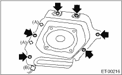

ENTERTAINMENT > Woofer
1. Disconnect the ground cable from the battery.
2. Remove the rear seat belt, rear seat, rear quarter upper, rear quarter lower, insulator and luggage floor mat.
3. Remove the woofer trim.
4. Disconnect the connector (B), and remove the woofer mounting screws and clips (A).

5. Disconnect the harness connector and detach the woofers.